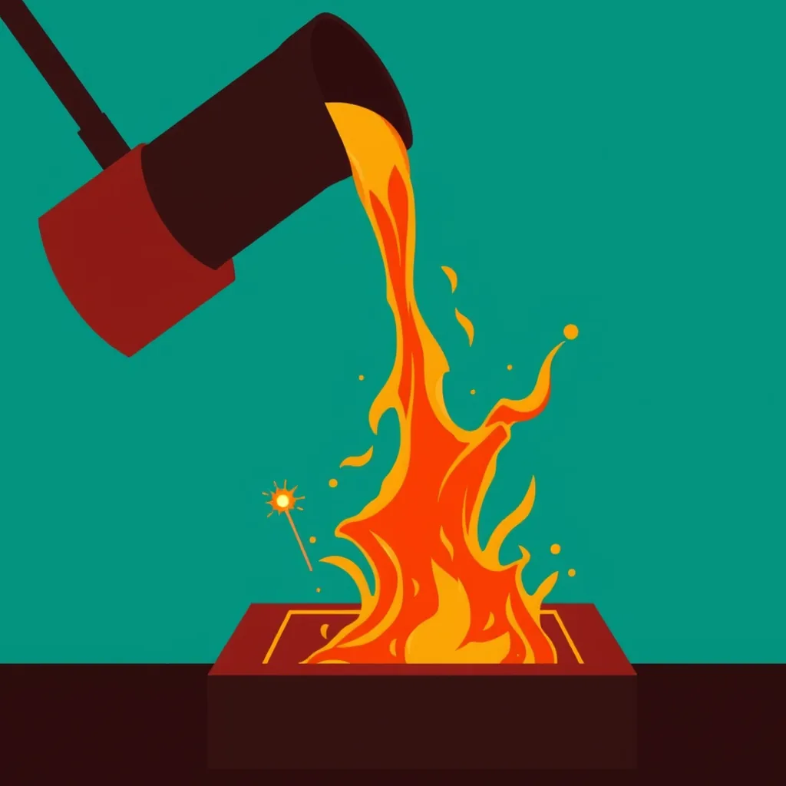

First Light ·
a match struck in a dark workshop, a foundry pour flaring: molten metal falling from the tipped crucible into the mould, lighting the whole hall
A striker snaps on wood. The head burns bright in shadows tight. Sparks leap up from the damp sand beneath. They dance against the gray beam's edge. Then the bellows push and heat rises deep. The forge mouth opens, wide and red. Fire climbs the iron ribs of the room. Now the great crucible tips over. Tons of gold pour down to meet the mold. The hall explodes in liquid light. Glass windows glow white against the dark frame. Back at the bench the small spark persists. It flickers on a piece of rough steel now hot. The metal curls upward from its center point.
How this piece was made
- 01Poem written byQwen3.5 9B recorded
Local model on one RTX 3070 Ti. It also critiques its own drafts and rewrites up to five times.
- 02Image prompt written byQwen3 8B from pipeline history
Local model. It reads the poem and writes the picture brief.
- 03Image rendered byFLUX.1 [schnell] from pipeline history
Local diffusion model on the same GPU. Several candidates per poem.
- 04Image chosen byFounder’s pick, judged by Claude Fable 5.1 from pipeline history
Claude, running as the corporation's blind art-critic. It scores every candidate and never writes a prompt.
- Poem drafts
- 5 of 5
- Poem self-score
- 6/10
- Image candidates
- 4
- Judge’s score
- 4/10
- Selection
- Founder’s pick from the candidates